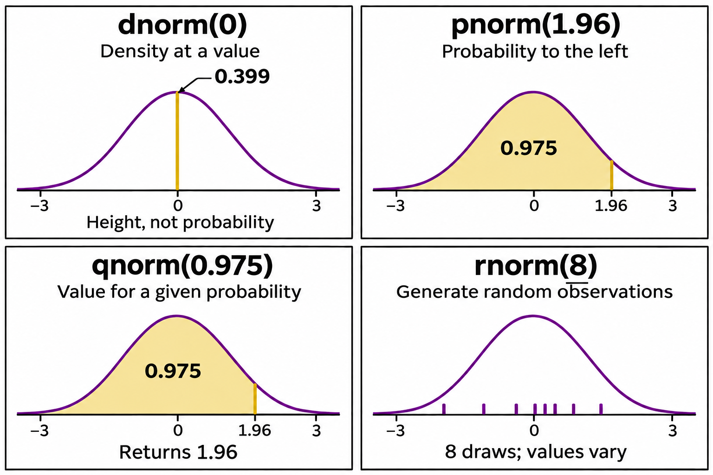
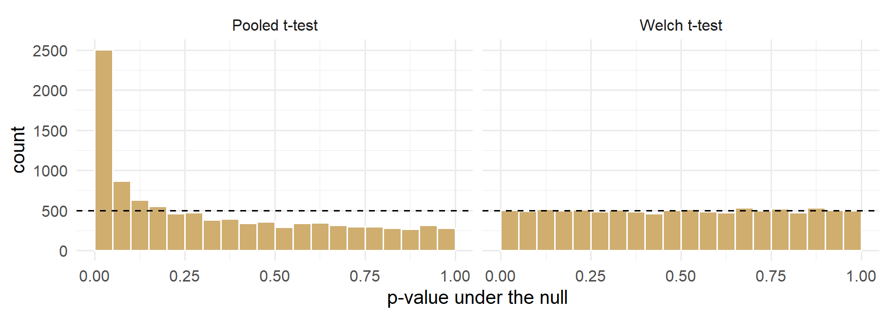
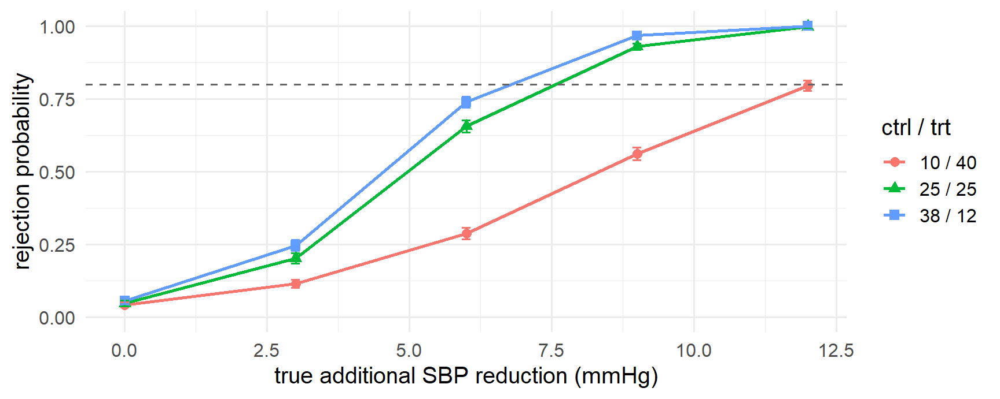
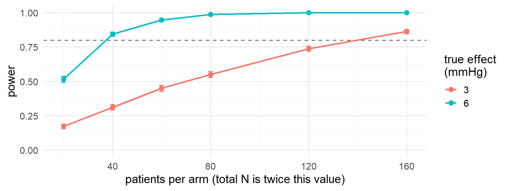
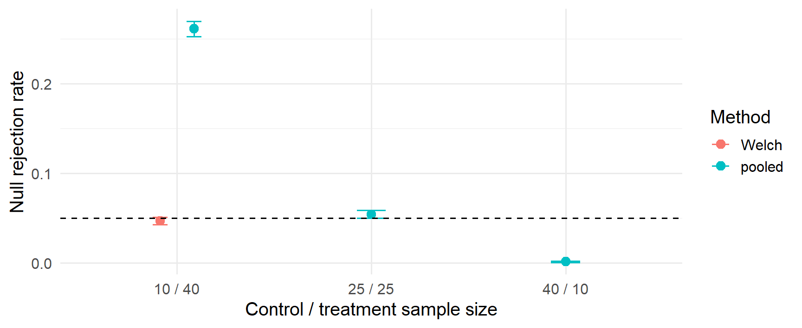

set.seed(42)
rnorm(3, mean = 120, sd = 10) # simulate 3 blood pressures[1] 133.7096 114.3530 123.6313BIOS 6301 · Session 14 · Introduction to Statistical Computing
| Session | Question | Main product |
|---|---|---|
| 14 · Simulation | How does a method behave when the truth is known? | A checked simulation study |
| 15 · Resampling | What can repeated use of observed data tell us? | Uncertainty, null tests, and resampling design |
| 16 · Models and synthesis | How do the course tools support a complete analysis? | Interpretable models and a reproducible handoff |
Functions, validation, and iteration from Sessions 11–13 support all three.
1 Explain what a seed is, and why reproducible randomness is not a contradiction.
2 Draw from a distribution using the r* functions, and use d*, p*, q* for the other three questions.
3 Structure a simulation study with the ADEMP scaffold.
4 Write one function that simulates a dataset and one that analyses it, and iterate over replicates.
5 Evaluate bias, RMSE, coverage, interval width, and failed replicates, with Monte Carlo uncertainty.
6 Explain why more replicates reduce simulation noise, and interpret a Monte Carlo SE for a simulated percentage.
7 Estimate type I error and power, and say what to do when the type I error is not what it should be.
| Block | Content |
|---|---|
| 1 | Pseudorandom numbers and reproducible streams |
| 2 | Sampling and distribution functions |
| 3 | ADEMP and known simulation truths |
| 4 | Generate, analyse, repeat, and retain failures |
| 5 | Bias, coverage, precision, and Monte Carlo error |
| 6 | Type I error, power, and allocation |
| 7 | Scenario sensitivity and lab decisions |
Use base R or tidyverse consistently; validate the same statistical target.
A random-number generator is a recipe that produces numbers that behave like random draws. We use them to simulate data, such as patients’ blood pressures.
[1] 133.7096 114.3530 123.6313This lets us share an example and get exactly the same simulated data.
[1] 1.3709584 -0.5646982 0.3631284[1] 0.6328626 0.4042683 -0.1061245Reproducible randomness is not a contradiction. The same seed, RNG settings, and sequence of random calls reproduce a run in the same computational environment. Changing the calls changes the stream used downstream.
.Random.seed remembers where R isR stores its current generator state in .Random.seed, an integer vector. Think of it as a bookmark: set.seed(42) resets it, and random calls update it.
Original code
Rerun this block: both outputs repeat.
Even unused random draws change later results. Calculations such as 2 + 2 do not.
Place set.seed() immediately before each simulation or analysis block whose output should stay the same when earlier code changes.
Both blocks give the same result because set.seed(99) resets .Random.seed immediately before rnorm(3).
For a simulation loop: set the seed once before the loop. Resetting the same seed inside every replicate repeats the same draws.
sample()[1] 3 4 1 2 5[1] "P006" "P048" "P022" "P004"[1] "B" "A" "B" "B" "A" "A" "B" "B"size defaults to length(x).replace = TRUE is the one-word difference between permuting and resampling — but the statistical target and resampling unit also change in Session 15.prob = gives unequal selection probabilities.sample() trap[1] 3 5 2 1 6 7 4sample(x) with a length-1 numeric x samples from 1:x. No error, no warning, plausible output — the exact failure mode session 12 was about.

AI-generated schematic, not to scale. Values refer to a normal distribution with mean 0 and SD 1.
Combine a prefix with a distribution name: r + norm gives rnorm().
What do you want to find?
| Prefix | Meaning | Example |
|---|---|---|
d |
Density or probability mass | dnorm(0) |
p |
Probability up to a value | pnorm(1.96) |
q |
Value at a given probability | qnorm(0.975) |
r |
Random draws | rnorm(10) |
pnorm(1.96) is about 0.975.
qnorm(0.975) is about 1.96.
Which distribution?
| Name | Distribution |
|---|---|
norm |
Normal (Gaussian) |
unif |
Uniform |
binom |
Binomial |
pois |
Poisson |
t |
Student’s t |
chisq |
Chi-squared |
exp |
Exponential |
gamma |
Gamma |
beta |
Beta |
rnorm, runif, rbinomParameters recycle, which is how you generate a whole trial in one call:
We create data under known conditions, apply a statistical method, and check how well it works across many simulated datasets.
Before running it, write down:
ADEMP gives us five headings for this plan.
Optional background: Morris, White & Crowther (2019), “Using simulation studies to evaluate statistical methods”, Statistics in Medicine, 38:2074–2102.
| You must be able to write down | ||
|---|---|---|
| A | Aims | The question, in one sentence |
| D | Data-generating mechanism | Exactly how one dataset is produced. Every parameter, every value |
| E | Estimands | The quantity being estimated — a number that exists before any method touches it |
| M | Methods | The procedures being compared, including the naive one |
| P | Performance measures | How you decide which method won, and with what precision |
Five headings, and the discipline is that you fill them in before you write any code.
Our simulated trial measures SBP reduction = baseline minus 12-week SBP (mmHg). A larger reduction means a larger drop.
For the same SBP trial, suppose mean reduction is 0 mmHg under control and 6 mmHg under treatment. How much additional reduction does treatment provide?
| Term | Meaning | Example in our simulation |
|---|---|---|
| Estimand | The true additional mean SBP reduction | mmHg |
| Estimator | The rule applied to sampled patients | Mean reduction in treatment minus mean reduction in control |
| Estimate | The result from one simulated trial | For example, 7.2 mmHg additional reduction |
We set the population means, so we know the truth is 6. New samples give different estimates, but the target stays 6.
If the estimates average 6.3 over many replicates, estimated bias is mmHg. One estimate’s error, , is not the bias.
A data-generating model describes the population and how we sample from it. We choose this model before choosing an R random-number function.
Our means and SDs are invented teaching scenarios, not clinical estimates.
We start with normal SBP reductions as a simple reference scenario. This lets us study unequal group sizes and SDs while keeping the distribution’s shape fixed.
For a real project, examine relevant prior or pilot data: group-specific histograms, Q–Q plots, outliers, and plausible ranges. Rough symmetry and modest tails may support a normal approximation. They do not prove it.
A normal model allows any real value. It may be unsuitable if it generates implausible changes, strong skewness is present, or extreme values are common.
Sensitivity check: repeat the study with skewed errors while preserving the population means and SDs. Report whether the conclusions change.
For one teaching scenario, assume independent reductions within each arm:
The treatment group’s population mean is 6 mmHg and SD is 4 mmHg. In the formula the second quantity is variance. R’s sd argument takes the SD.
[1] 3.5 9.0 1.1 7.1 1.9rnorm() implements our assumption. These five patients need not have a sample mean of exactly 6 or a sample SD of exactly 4.
Before a large run, inspect simulated ranges, plots, and group summaries. That checks the generator’s implementation; real-world plausibility needs evidence.
flowchart LR P["<b>data model</b><br/>shape, dependence, parameters"] --> S["<b>simulate_one()</b><br/>one dataset"] S --> A["<b>analyse_one()</b><br/>one row of results"] A --> R["<b>replicate</b><br/>× n_sim"] R --> T["<b>results</b><br/>one row per replicate"] T --> M["<b>performance</b><br/>bias, SE, rejection rate"] style S fill:#CFAE70,stroke:#8a7448,color:#fff style A fill:#CFAE70,stroke:#8a7448,color:#fff style P fill:#f4efe4,stroke:#CFAE70
Session 11 gave you functions. Session 13 gave you iteration. This is what they were for.
# One SBP trial: y is baseline minus 12-week SBP (mmHg).
# Assumptions: independent patients, normal reductions within each arm.
simulate_trial <- function(n_ctrl, n_trt, sd_ctrl, sd_trt, delta = 0) {
stopifnot(n_ctrl >= 2, n_trt >= 2, sd_ctrl > 0, sd_trt > 0)
data.frame(
arm = rep(c("ctrl", "trt"), c(n_ctrl, n_trt)),
y = c(rnorm(n_ctrl, mean = 0, sd = sd_ctrl),
rnorm(n_trt, mean = delta, sd = sd_trt))
)
}
set.seed(6301)
head(simulate_trial(3, 3, 12, 4, delta = 8), 3) arm y
1 ctrl -5.667400
2 ctrl 12.457060
3 ctrl 3.299615analyse_trial <- function(data, pooled = FALSE) {
x <- data$y[data$arm == "trt"]
y <- data$y[data$arm == "ctrl"]
fit <- t.test(x, y, var.equal = pooled)
c(est = mean(x) - mean(y), se = fit$stderr,
p = fit$p.value, lo = fit$conf.int[1], hi = fit$conf.int[2])
}
set.seed(6301)
round(analyse_trial(simulate_trial(20, 20, 12, 4, delta = 8)), 3) est se p lo hi
8.171 2.473 0.003 3.096 13.246 Passing treatment first makes the estimate and interval both treatment minus control. Check this direction before running any replications.
est se p lo hi
Welch 1.116 2.512 0.666 -4.429 6.661
pooled 1.116 1.883 0.556 -2.670 4.902Both tests estimate the same mean difference. Their standard errors, degrees of freedom, intervals, and p-values can differ. Pairing methods within a replicate also supports direct comparisons of their performance.
run_scenario <- function(n_sim, n_ctrl, n_trt, sd_ctrl, sd_trt,
delta = 0, pooled = TRUE) {
out <- replicate(n_sim, {
d <- simulate_trial(n_ctrl, n_trt, sd_ctrl, sd_trt, delta)
analyse_trial(d, pooled = pooled)
})
as.data.frame(t(out)) # n_sim rows, one per replicate
}
set.seed(6301)
demo <- run_scenario(5, 20, 20, 12, 4, delta = 8)
round(demo, 3) est se p lo hi
1 8.171 2.473 0.002 3.164 13.177
2 2.910 2.843 0.312 -2.845 8.664
3 1.976 2.730 0.474 -3.551 7.502
4 5.212 3.631 0.159 -2.138 12.562
5 6.813 2.965 0.027 0.811 12.815Keep one row per replicate, and carry every parameter that varies:
# A tibble: 1 x 4
method reject bias emp_se
<chr> <dbl> <dbl> <dbl>
1 pooled 0.26 -0.243 3.78[1] 12 alloc method delta
1 25 / 25 pooled 0
2 10 / 40 pooled 0
3 40 / 10 pooled 0nrow(grid) scenarios × n_sim replicates is the whole cost of the study. Compute that number before you start the run, not while it is running.
For expensive studies, run a script once and let the report read the saved results.
simulate_bad <- function(n_ctrl, n_trt, sd_ctrl, sd_trt, delta = 0) {
set.seed(6301) # <- the bug
data.frame(
arm = rep(c("ctrl", "trt"), c(n_ctrl, n_trt)),
y = c(rnorm(n_ctrl, 0, sd_ctrl), rnorm(n_trt, delta, sd_trt))
)
}
bad <- as.data.frame(t(replicate(500, analyse_trial(simulate_bad(25, 25, 12, 4)))))
c(reject = mean(bad$p < 0.05), bias = mean(bad$est), emp_se = sd(bad$est)) reject bias emp_se
0.000000 1.082951 0.000000 No error or warning. The empirical SE is zero and the rejection rate is either zero or one. The reported bias is the error of a single repeated estimate, not necessarily zero.
| Where | Check |
|---|---|
| Arguments | stopifnot(n_ctrl >= 2, sd_ctrl > 0, length(delta) == 1) |
| The DGM | Simulate once at ; the empirical mean and SD should be close to the parameters within simulation variation |
| The results object | nrow(res) == n_sim, count failed/nonfinite rows; check variability where expected |
| A known case | A setting where you know the answer must return it, to within Monte Carlo error |
analyse_checked <- function(data, pooled = FALSE) {
tryCatch({
value <- analyse_trial(data, pooled)
if (any(!is.finite(value))) stop("nonfinite result")
list(value = value, error = NA_character_)
}, error = function(e) list(value = NULL, error = conditionMessage(e)))
}
bad_data <- data.frame(arm = rep(c("ctrl", "trt"), each = 3), y = 1)
analyse_checked(bad_data)$error[1] "data are essentially constant"Retain the replicate ID, scenario, method, and reason. Warnings also need review; this wrapper catches errors, not warnings.
Suppose 100 attempts produce 90 valid intervals, of which 86 contain the truth.
| Quantity | Calculation | Interpretation |
|---|---|---|
| Failure rate | 10 / 100 | Procedure did not return an interval |
| Coverage among successful fits | 86 / 90 | Conditional on success |
| Successful coverage per attempt | 86 / 100 | Counts failure as unsuccessful coverage |
Report the failure rate and the chosen denominator. Silently applying na.rm = TRUE can hide poor performance in difficult samples.
| Measure | Estimated by | Answers |
|---|---|---|
| Bias | Is the estimator systematically off? | |
| Empirical SE | How variable is it, run to run? | |
| Coverage | Does the 95% CI cover 95% of the time? | |
| Type I error | , with | Does the test hold its size? |
| Power | , with | Will the study detect a real effect? |
Type I error and power are the same computation on data from the same DGM with delta set differently. Nothing else changes.
Monte Carlo means using repeated random draws to answer a question.
Suppose a test really rejects 5% of the time under the null. In 1,000 simulated trials, we expect about 50 rejections, but we will not always get exactly 50.
A fixed seed reproduces the same answer. More replicates make the answer less sensitive to the particular random draws.
| Sampling uncertainty | Monte Carlo uncertainty | |
|---|---|---|
| What varies? | A treatment effect estimate across trials | A rejection rate across full simulation runs |
| Example | Each trial has 50 patients | Each simulation run contains 1,000 trials |
| What helps? | More patients per trial | More simulated trials per run |
Increasing patients per trial changes the study we are evaluating. Increasing replicates helps us evaluate that same study more precisely.
The Monte Carlo standard error (MCSE) describes how much a simulated proportion varies across repeated runs of the simulation.
For independent replicates, , where is the observed proportion and is the number of replicates.
rate MCSE lower upper
5.20 0.70 3.82 6.58 The rate is 5.2%, with MCSE 0.70 percentage points and an approximate 95% Monte Carlo interval of 3.82% to 6.58%. This run gives little evidence that the true rejection rate differs from 5%.
set.seed(1402)
check_ci <- run_scenario(1000, 10, 40, 12, 4, delta = 6, pooled = FALSE)
covered <- check_ci$lo <= 6 & 6 <= check_ci$hi
c(bias = mean(check_ci$est) - 6,
empirical_se = sd(check_ci$est), mean_model_se = mean(check_ci$se),
coverage = mean(covered), width = mean(check_ci$hi - check_ci$lo),
coverage_mcse = sqrt(mean(covered) * (1 - mean(covered)) / nrow(check_ci))) bias empirical_se mean_model_se coverage width
0.124394859 3.742722925 3.757382982 0.953000000 16.849626866
coverage_mcse
0.006692608 The truth is 6, not the estimate from one simulated sample. Wide intervals may cover well while being too imprecise to be useful.
bias rmse mcse_bias
0.1243949 3.7429188 0.1183553 RMSE summarizes squared estimation error; coverage evaluates an interval procedure. They answer different questions. A small bias does not imply a calibrated interval.
Zero rejections out of 1,000 does not establish a true rejection probability of zero. The plug-in MCSE formula gives zero here; a binomial interval exposes the remaining uncertainty.
Use interval estimates near zero or one, and state the number of valid replicates.
For a rejection probability near 5%:
| Replicates | Expected rejections | MCSE (percentage points) |
|---|---|---|
| 100 | 5 | 2.18 |
| 1,000 | 50 | 0.69 |
| 10,000 | 500 | 0.22 |
Four times as many replicates halves the MCSE. More precision costs more computing time.
Start with a small run to check the code. Then choose a larger, fixed number of replicates and report the MCSE with the final result.
near_null worst_case
1900 10000 The conservative bound uses and covers every probability. A design sized for Type I error near 0.05 can give less precise power estimates.
Choose the precision target before inspecting favorable results. Use a pilot to debug and estimate computational cost, then run the planned study.
Two arms. Different variances — 12 vs 4 mmHg. Different sizes — and it is the combination that does the damage.
The pooled t-test assumes a common variance. It estimates one from both arms, weighting by degrees of freedom, and gets df. Welch estimates each arm’s variance separately and adjusts the df downwards.
t.test() defaults to var.equal = FALSE. The pooled and Welch procedures use different standard-error formulas; neither corrects a wrong sampling unit or a biased dataset.
Four scenarios, , . If the test is behaving, an individual rejection estimate is typically within about 0.0044 of 0.05. This is an approximate simulation uncertainty range, not a guarantee for every scenario.
n_sim <- 10000
set.seed(6301)
scenarios <- list(
list(lab = "25 / 25", nc = 25, nt = 25, pooled = TRUE),
list(lab = "10 / 40", nc = 10, nt = 40, pooled = TRUE),
list(lab = "40 / 10", nc = 40, nt = 10, pooled = TRUE),
list(lab = "10 / 40", nc = 10, nt = 40, pooled = FALSE)
)
type1 <- do.call(rbind, lapply(scenarios, function(s) {
r <- run_scenario(n_sim, s$nc, s$nt, sd_ctrl = 12, sd_trt = 4,
delta = 0, pooled = s$pooled)
data.frame(alloc = s$lab, method = ifelse(s$pooled, "pooled", "Welch"),
reject = mean(r$p < 0.05), bias = mean(r$est), emp_se = sd(r$est))
}))
type1$mcse <- sqrt(type1$reject * (1 - type1$reject) / n_sim)| Allocation | Method | Rejection rate | MC SE | Bias | Emp. SE |
|---|---|---|---|---|---|
| 25 / 25 | pooled | 0.0543 | 0.0023 | -0.024 | 2.53 |
| 10 / 40 | pooled | 0.2614 | 0.0044 | +0.076 | 3.87 |
| 40 / 10 | pooled | 0.0016 | 0.0004 | +0.024 | 2.26 |
| 10 / 40 | Welch | 0.0469 | 0.0021 | +0.007 | 3.80 |
, , , . Nominal .

Figure 1: Null p-values, 10,000 replicates, n = 10 / 40, sd = 12 / 4.
For an exact continuous null p-value, the expected count is 500 per bin. Welch is approximate; discrete valid tests may be conservative rather than uniform. Excess near zero can reveal inflated Type I error.
Welch uses with approximate degrees of freedom.
Add an equal-variance scenario before making a claim about that tradeoff.
Suppose treatment truly produces 6 mmHg more mean SBP reduction than control. Our test still asks whether the population mean difference is zero.
Power is the probability that the planned test rejects that null when the specified effect is real. Power of 80% means about 80 of 100 repeated trials would reject it. The remaining 20 would miss the effect (type II error).
To estimate power by simulation:
p < 0.05.Here we use a two-sided Welch test at 5%. At a true effect of zero, the same calculation estimates type I error instead of power to detect a nonzero effect.
Assume independent normal reductions, 40 patients per arm, SDs 12 and 4, and a true additional reduction of 6 mmHg.
set.seed(1456)
power_run <- run_scenario(2000, 40, 40, 12, 4,
delta = 6, pooled = FALSE)
stopifnot(nrow(power_run) == 2000, all(is.finite(power_run$p)))
detected <- power_run$p < 0.05
power_hat <- mean(detected)
power_mcse <- sqrt(power_hat * (1 - power_hat) / nrow(power_run))
round(c(power = power_hat, MCSE = power_mcse), 3)power MCSE
0.838 0.008 We detected the effect in 1676 of 2,000 trials. The estimated power is 83.8%, with MCSE 0.82 percentage points.
Each replicate contains 80 patients. The MCSE denominator is 2,000 trials.
For the same true effect of 6 mmHg, each simulated trial gives a p-value and a confidence interval for the treatment effect.
| Quantity | What we count or calculate |
|---|---|
| Power | Fraction of trials rejecting the null effect of zero |
| Coverage | Fraction of treatment-effect intervals containing the true value 6 |
| MCSE of power | Uncertainty in the power estimate because we simulated a finite number of trials |
An interval [2, 10] mmHg covers 6 and excludes 0: it covers and detects. An interval [−2, 14] mmHg covers 6 but includes 0: it covers but does not detect.
The worked design’s approximate 95% Monte Carlo interval for power is 82.2% to 85.4%. These endpoints describe a probability of detection, not a treatment effect in mmHg.

Figure 2: Welch power. Total N = 50 in every scenario. sd = 12 (ctrl) / 4 (trt).
Along each curve, the true effect changes. Between curves, the allocation changes while total N stays 50. At effect 0, rejection is type I error; at nonzero effects, it is power. Bars show 95% Monte Carlo intervals from 2,000 trials per point.

Figure 3: Welch test at 5%, normal reductions, SDs 12 and 4. Equal group sizes.
More patients increase power in these scenarios. A smaller effect requires more patients to reach the same target. The dashed line marks an illustrative 80% target. Bars describe Monte Carlo uncertainty from 2,000 trials per point.
More patients can raise power. More simulation replicates estimate that power more precisely. Neither 80% nor a single simulated crossing is a universal rule.
These conclusions apply to the data-generating scenarios we studied. More replicates improve precision within a scenario. They do not establish that its distribution or independence assumptions describe a real trial.
This is the general move: when you do not know whether a method works under your conditions, build your conditions and find out.
[1] 16 n_ctrl n_trt delta dgm
1 10 10 0 normal
2 30 10 0 normal
3 10 30 0 normal
4 30 30 0 normalVary sample size, allocation, and distribution deliberately. Keep the estimand unchanged when comparing robustness across data-generating mechanisms.
Subtract the theoretical log-normal mean and divide by its theoretical SD. Centering every generated sample by its own mean would remove sampling variation.
arm y
1 ctrl -10.683638
2 ctrl 15.386841
3 ctrl -5.293769analyse_trial() stays unchanged. The true treatment-minus-control mean difference remains delta in both mechanisms.

Bars show approximate Monte Carlo intervals, not intervals from an individual trial.
“The new method has 95% coverage: 950 of 1,000 successful fits covered. Another 200 fits failed. We stopped when coverage first reached 95%.”
Identify the denominator problem, the stopping problem, and the evidence needed before comparing this method with another procedure.
Explain: Why can a method have small bias but poor coverage? Why does increasing replication not fix a wrong generator?
| Tool | What it does |
|---|---|
Base R replicate() |
Repeats an expression. Enough for today’s small example |
SimDesign::runSimulation() |
Runs a scenario design using your Generate, Analyse, and Summarise functions |
rsimsum::simsum() |
Summarises stored estimates, including bias, coverage, and Monte Carlo SEs |
SimDesign can manage repetition, parallel execution, and error tracking. You still specify the data-generating process and the analysis.
For this class: learn the steps with replicate(). A framework becomes useful as the number of scenarios and methods grows.
Optional guides: SimDesign introduction and rsimsum documentation.
Next connection: Session 15 uses observed data for bootstrap and permutation. Session 16 connects regression, cross-validation, and the complete course workflow.
BIOS 6301 · Session 14 · Random Numbers and Simulation